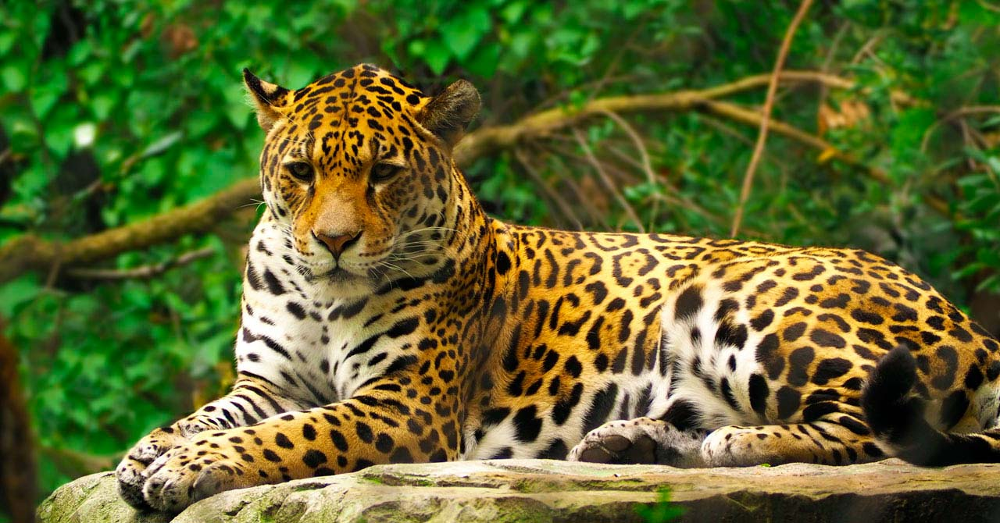
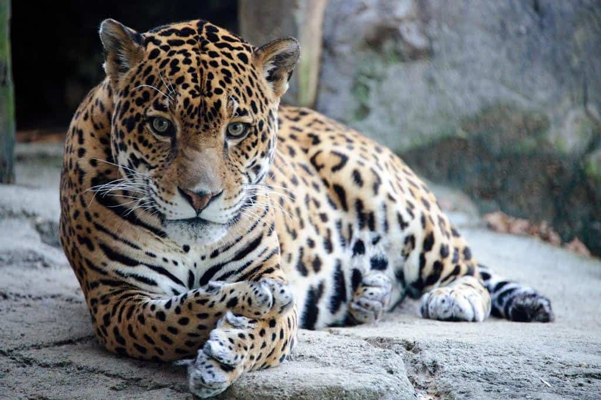
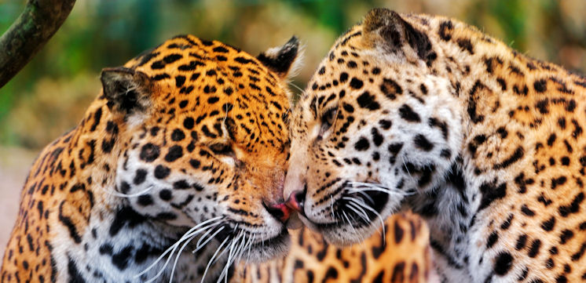

Qu'est-ce qu'un jaguar ?
Le jaguar (Panthera onca) est un mammifère carnivore de la famille des Felidae
et fait partie des cinq grands félins du genre Panthera, aux côtés du léopard,
du tigre, du lion et de la panthère des neiges.
Il se reconnaît à sa fourrure tachetée de noir, formant des rosettes, sur une
robe qui varie du blanc au roux. Derrière sa belle silhouette, son visage
attendrissant et ses petites oreilles rondes se cache pourtant un redoutable prédateur,
dont la morsure est la plus puissante de tous les félidés. Trapu et court sur pattes,
le jaguar mesure entre 1,12 m et 1,85 m, avec une queue d’environ 60 cm. Les mâles
pèsent généralement entre 50 et 100 kg, tandis que les femelles pèsent entre 40 et 70 kg.


Où vit le jaguar ?
Son aire de répartition s’étend du Mexique à une grande partie de l’Amérique
centrale et de l’Amérique du Sud, jusqu’au nord de l’Argentine et du Paraguay.
Aujourd’hui, il vit surtout dans les forêts denses et humides,
où la végétation est abondante, notamment dans les forêts tropicales du Venezuela,
de l’Équateur, du Honduras, du Nicaragua et de l’Argentine.
Très à l’aise dans l’eau, le jaguar est aussi un excellent nageur.
Animal solitaire et territorial, il veille à éviter ses congénères.
Disparu à l’état sauvage des États-Unis depuis le début des
années 1970, il est encore présent, entre autres, en Guyane française.
Une espèce quasiment menacée
Le jaguar est également victime de la pollution, qui est une des principales menaces pour sa survie.
Il est une espèce quasi menacée selon l'Union internationale pour la conservation de la nature (UICN),
et ses effectifs sont en baisse. Sa population a diminué de 30 % en 20 ans Alors que le commerce international
des jaguars ou de leurs dérivés est interdit, il est pourtant victime de la chasse illégale, qui est une
des principales menaces pour sa survie. Un conflit persiste entre l'animal et les éleveurs et les agriculteurs
d'Amérique du Sud. Bien que de plus en plus réduite, son aire de répartition reste large.
